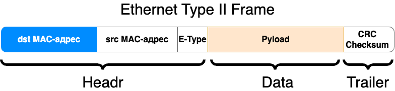
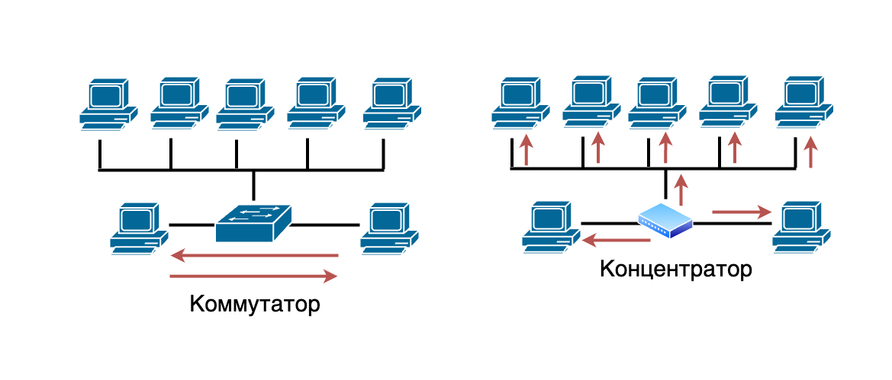
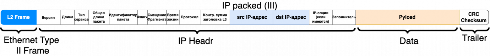
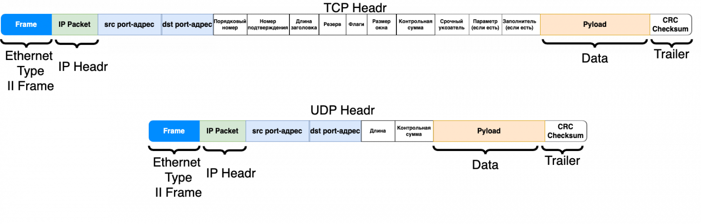

Как пользоваться презентациями
Модель OSI
Игорь Григорьевич Пеймер,
ГБПОУ РК «Симферопольский политехнический колледж им Л.С.Голицына»
2026
.jpg)



- Поле данных (Payload)
- Заголовок (Header)
- Контрольная последовательность (Trailer/CRC)
Основная задача канального уровня – передача информации в рамках одной локальной сети.
Для этого используются уникальные MAC-адреса, которые есть у каждого сетевого оборудования.
Основные функции канального уровня:
- Форматирование данных: преобразование необработанных битов данных в структурированные кадры.
- Обнаружение и исправление ошибок — путем обнаружения и исправления ошибок передачи.
- Управление доступом к среде: контроль доступа к общему физическому средству передачи и предотвращение коллизий.
- Адресация: использование MAC-адресов.
Примеры технологий и стандартов
- Ethernet: основной стандарт для локальных сетей (LAN).
- Wi-Fi: беспроводной стандарт, основанный на 802.11.
- MAC-адреса: уникальные идентификаторы для сетевых интерфейсов.
- Коммутаторы (Switches): устройства для соединения узлов в сети на уровне L2.

Если в локальной сети два одинаковых MAC?
Бывает, что в одной партии у сетевого оборудования имеются одинаковые MAC-адреса, а то и во всей партии.
- Прерывание связи
- Нестабильность сети
- Конфликты и коллизии
- Проблемы с коммутацией

Состав IP-пакета
- Заголовок IP-пакета
- Полезная нагрузка

Заголовок
- Version (Версия): указывает версию IP-протокола (4 для IPv4).
- Header Length (Длина заголовка): длина заголовка в 32-битных словах.
- Type of Service (Тип обслуживания): качество обслуживания и приоритет.
- Total Length (Общая длина): общая длина пакета в байтах.
- Identification (Идентификация): уникальный идентификатор пакета.
- Flags (Флаги): управление фрагментацией.
- Fragment Offset (Смещение фрагмента): положение фрагмента в исходном пакете.
- Time to Live (Время жизни): максимальное число маршрутизаторов.
- Protocol (Протокол): протокол транспортного уровня (например, TCP или UDP).
- Header Checksum (Контрольная сумма заголовка): контрольная сумма заголовка.
- Source IP Address (IP-адрес отправителя): IP-адрес отправителя.
- Destination IP Address (IP-адрес получателя): IP-адрес получателя.
- Options (Опции): дополнительные опции.
- Маршрутизация
- Логическая адресация
- Фрагментация
- Перенаправление

Основные задачи
- Сегментация и сборка данных
- Сегментация
- Сборка
- Управление потоком данных
- Контроль скорости передачи
- Окна скольжения
- Контроль ошибок
- Обнаружение ошибок
- Исправление ошибок
Основные задачи
- Надежная передача данных
- Подтверждение получения (ACK)
- Трехстороннее рукопожатие
- Мультиплексирование
- Разделение каналов
- Порты

Основные протоколы
TCP
- Соединение
- Надежность
- Управление потоком
- Контроль ошибок
Основные протоколы
UDP
- Без установления соединения
- Ненадежность
- Простота и скорость
Другие протоколы транспортного уровня
- SCTP (Stream Control Transmission Protocol)
- DCCP (Datagram Congestion Control Protocol)
- RTP (Real-time Transport Protocol)

Зачем нужны сеансы
- Управление соединениями
- Синхронизация данных
- Управление ресурсами
Основные функции сеансового уровня
- Установление сеанса
- Поддержание сеанса
- Завершение сеанса
- Синхронизация
Примеры типов соединений
- Симплексное соединение
- Полудуплексное соединение
- Полный дуплекс
Применение сеансового уровня (SIP)
- Установление сеанса: SIP позволяет устройствам и клиентам устанавливать соединение, определять тип сеанса (аудио, видео и т.д.) и устанавливать параметры сеанса (Quality of Service, QoS).
- Управление сеансом: в процессе сеанса SIP поддерживает обмен мультимедийными данными и управляет параметрами сеанса.
- Завершение сеанса: после завершения сеанса SIP освобождает ресурсы и закрывает соединение между устройствами.

Основные функции
Преобразование данных:
- Описание: представительный уровень отвечает за конвертацию данных в формат, который может быть понят и обработан другими уровнями и устройствами.
- Пример: преобразование текстового документа из формата Unicode в ASCII перед его передачей по сети.
Основные функции
Шифрование и дешифрование:
- Описание: этот уровень обеспечивает безопасность данных путем их шифрования перед отправкой и дешифрования после получения.
- Пример: использование SSL/TLS для защиты конфиденциальных данных, таких как логины и пароли, передаваемых через интернет.
Основные функции
Сжатие данных:
- Описание: Представительный уровень уменьшает объем данных для более эффективной передачи по сети.
- Пример: Сжатие изображений в формат JPEG для экономии пропускной способности и ускорения загрузки веб-страниц.
Кодирование и декодирование:
- Описание: преобразование данных в формат, который может быть распознан и интерпретирован программами и устройствами.
- Пример: кодирование звукового файла в формат MP3 для эффективной передачи и воспроизведения музыки.
Примеры технологий и стандартов:
- HTML (HyperText Markup Language)
- DOC
- JPEG (Joint Photographic Experts Group)
- MP3 (MPEG Audio Layer III)
- AVI (Audio Video Interleave)
- Sockets